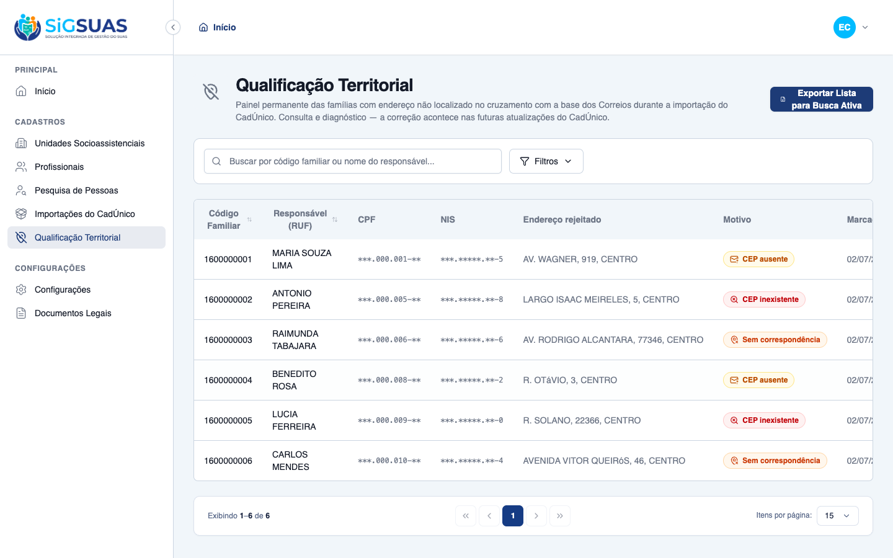
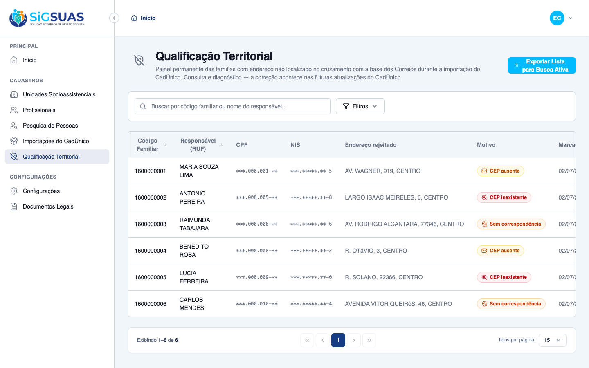

HU #9763: 5 Critérios de Aceite evidenciados — CA04 (download do CSV pelo botão "Exportar Lista para Busca Ativa") demonstrado ao vivo no navegador, com o arquivo real anexado ao dossiê (BOM UTF-8, separador ';', 6 famílias); CA05 (auditoria do export) verificado no banco com CPF do usuário mascarado e contagem exportada; CA-extra-A (5 colunas RN04 na ordem) conferido no próprio arquivo; CA-extra-B (bloqueio sem permissão) e CA-extra-C (isolamento territorial) cobertos pela suíte automatizada. A revisão de código desta etapa adicionou proteção contra CSV Formula Injection (CWE-1236) — campos de texto livre iniciados por caracteres de fórmula são neutralizados com apóstrofo (fix 25ca310, testado com payload real). Suíte: 45 testes, 186 assertions, 100% verdes. Resultado geral: todos os critérios atendidos.
| CA | Critério | Status |
|---|---|---|
| CA04 | Geração do arquivo para download | ATENDIDO · navegador |
| CA05 | Registro de auditoria do Usuário | ATENDIDO · navegador + automatizado |
| CA-extra-A | Colunas obrigatórias do arquivo (RN04) | ATENDIDO · navegador + automatizado |
| CA-extra-B | Bloqueio sem permissão (RN05) | ATENDIDO · automatizado |
| CA-extra-C | Isolamento territorial do arquivo (RN07) | ATENDIDO · automatizado |
Critério (Gherkin): Dado que estou no Painel de Inconsistências com permissão de exportação Quando clico no botão "Exportar Lista para Busca Ativa" E o processamento do arquivo termina Então o sistema baixa uma planilha (CSV) com os dados estruturados das famílias e seus respectivos endereços textuais inválidos
Como foi testado: Login como Master E2E → Qualificação Territorial → clicar em Exportar Lista para Busca Ativa (botão no cabeçalho do painel).


Critério (Gherkin): Dado que o download foi concluído com sucesso (CA04) Quando o sistema encerra a operação Então uma linha de log de auditoria é gravada com o dia, o horário e o Usuário único (CPF/Login) que extraiu as informações daquele município
Como foi testado: Após o download do CA04, consulta direta à tabela activity_log no PostgreSQL (saída em auditoria-export.txt).
Evidência por cobertura automatizada — ver Anexo.
Critério (Gherkin): Dado um export gerado Quando abro a planilha Então cada linha traz Código Familiar, Nome do RUF, NIS do RUF, Telefone (se houver) e o texto completo do Endereço Inconsistente
Como foi testado: Inspeção do arquivo baixado no CA04 (anexo ao dossiê).
Evidência por cobertura automatizada — ver Anexo.
Critério (Gherkin): Dado um Operador SEM o papel de Qualificação Territorial Quando acesso o painel Então o botão "Exportar Lista para Busca Ativa" não aparece E o endpoint de exportação responde 403 se acessado diretamente
Como foi testado: Coberto pela suíte automatizada (apêndice) + Vitest do botão v-can. Evidência visual complementar no dossiê #9764 (operador sem papel não acessa sequer o painel).
Evidência por cobertura automatizada — ver Anexo.
Critério (Gherkin): Dado que estou no Tenant A Quando exporto a lista Então o arquivo contém apenas famílias do meu município, sem dados de outro tenant
Como foi testado: Coberto pela suíte automatizada (apêndice): inconsistências em dois tenants; export autenticado no Tenant A.
Evidência por cobertura automatizada — ver Anexo.
PASS Tests\Unit\Models\FamilyAddressInconsistencyTest ✓ it uses tenant scope, soft deletes, HasUuid and LogsActivity 0.39s ✓ it casts status/failure_reason to enums and defaults status to open 0.01s ✓ it generates a uuid on create and resolves route by uuid 0.08s ✓ it relates to family, address and both imports 0.01s ✓ it hydrates the resolved factory state 0.03s ✓ it never logs the rejected address text in the activity log (LGPD) 0.01s ✓ it enforces one open inconsistency per (tenant, family) via partial… 0.03s PASS Tests\Unit\Services\AddressInconsistencyExportServiceTest ✓ it builds the CSV row with the 5 RN04 columns in the spec order 0.02s ✓ it renders missing phone and nulls as empty strings (RN04) 0.01s ✓ it quotes only fields containing separator, comma, quotes or line b… 0.01s ✓ it prefixes an apostrophe on fields starting with a formula-trigger… 0.01s ✓ it does not alter fields without a leading formula-trigger char 0.02s ✓ it exposes the pt-BR spreadsheet format constants (BOM UTF-8, semic… 0.01s ✓ it records the export audit with masked causer CPF and no raw PII (… 0.02s ✓ it does not throw when the audit write fails — logs a technical err… 0.02s PASS Tests\Feature\Api\Client\AddressInconsistencyAccessTest ✓ it denies the panel to the base operator without the dedicated role… 0.07s ✓ it grants panel + export on the next request when the Master assign… 0.06s ✓ it blocks with 403 on the request right after the Master revokes th… 0.06s ✓ it lets the Master always view, export and manage the panel (CA-ext… 0.03s ✓ it offers the role as assignable in the drawer with the LGPD label… 0.04s ✓ it does not let a grant in Tenant A open the panel in Tenant B (CA-… 0.05s ✓ it blocks immediately when the professional is inactivated, keeping… 0.05s PASS Tests\Feature\Api\Client\AddressInconsistencyExportTest ✓ it downloads a CSV with BOM, semicolon and the 5 RN04 columns in or… 0.05s ✓ it neutralizes CSV formula injection in free-text fields without al… 0.04s ✓ it leaves the phone column empty when the family has no contact pho… 0.05s ✓ it quotes fields containing the separator and skips resolved incons… 0.05s ✓ it records exactly ONE audit line per download with causer, datetim… 0.04s ✓ it applies the same filters as the panel and audits them (RN04/RN06… 0.04s ✓ it denies the export without the .export permission — even holding… 0.05s ✓ it exports only families of the active tenant (CA-extra-C/RN07) 0.05s PASS Tests\Feature\Api\Client\AddressInconsistencyPanelTest ✓ it lists Código Familiar, RUF name and rejected address for open in… 0.04s ✓ it always masks CPF and NIS on screen (CA03/LGPD) 0.04s ✓ it shows only open inconsistencies (resolved leave the panel — RN01… 0.05s ✓ it filters by failure_reason and searches by family code or RUF nam… 0.05s ✓ it denies access without the address-inconsistencies.index permissi… 0.03s ✓ it isolates the panel by tenant (CA-extra-D / RN07) 0.05s ✓ it seeds the dedicated role with the restricted permissions and gra… 0.03s ✓ it keeps the permission away from the base operador and preserves t… 1.04s ✓ it is a read-only resource: no write routes are registered (RN03) 0.02s PASS Tests\Feature\Services\Cadunico\CadunicoSyncAddressInconsistencyTest ✓ it flags the family as open inconsistency when the CEP is missing (… 0.10s ✓ it flags cep_not_found when the CEP does not exist in the DNE base… 0.10s ✓ it accumulates new failures over previous batches (CA02: 50 + 10 =… 0.50s ✓ it resolves the open inconsistency when a future import fixes the a… 0.09s ✓ it does not duplicate the open row when the same family fails again… 0.08s ✓ it never breaks the sync when the checker fails internally (regress… 0.07s Tests: 45 passed (186 assertions) Duration: 4.15s